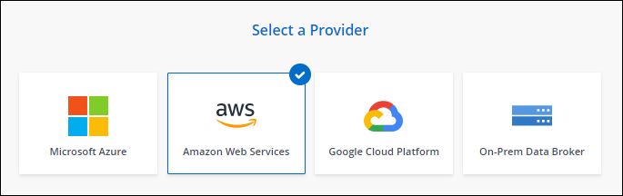
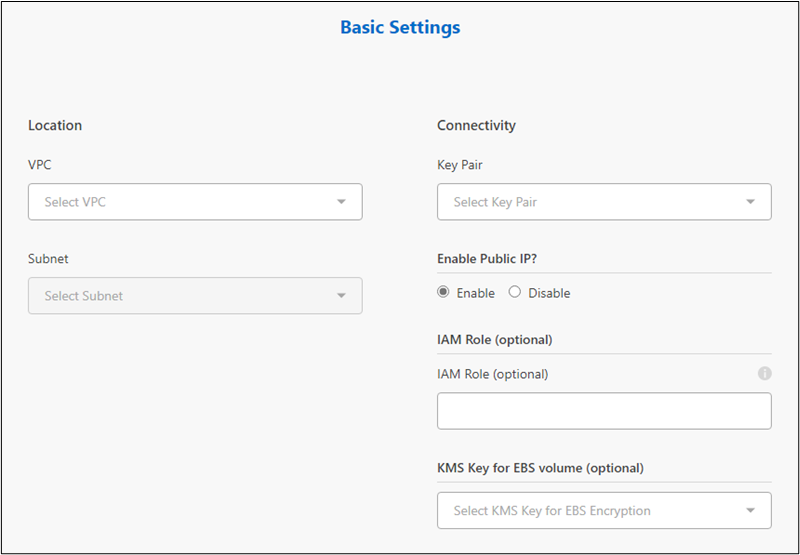
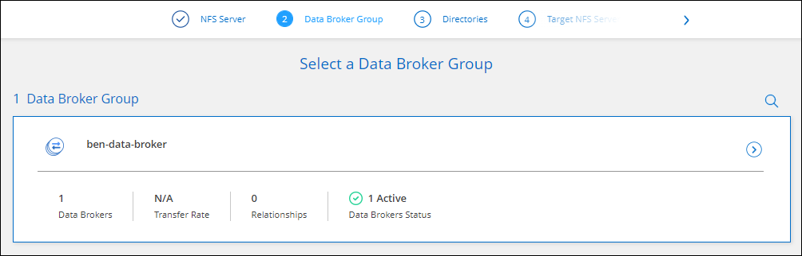

Richiedi modifiche alla documentazione
Richiedi modifiche alla documentazione Modifica questa pagina
Modifica questa pagina Scopri come collaborare
Scopri come collaborareCreazione di un nuovo data broker in AWS
Collaboratori
Quando crei un nuovo gruppo di broker di dati, scegli Amazon Web Services per implementare il software di broker di dati su una nuova istanza EC2 in un VPC. BlueXP copy and Sync guida l’utente attraverso il processo di installazione, ma i requisiti e i passaggi sono ripetuti in questa pagina per aiutarti a prepararti all’installazione.
È inoltre possibile installare il data broker su un host Linux esistente nel cloud o on-premise. "Scopri di più".
Regioni AWS supportate
Tutte le regioni sono supportate, ad eccezione delle regioni della Cina.
Privilegi root
Il software del data broker viene eseguito automaticamente come root sull’host Linux. L’esecuzione come root è un requisito per le operazioni di data broker. Ad esempio, per montare condivisioni.
Requisiti di rete
-
Il broker di dati necessita di una connessione Internet in uscita in modo che possa eseguire il polling del servizio di copia e sincronizzazione BlueXP per le attività sulla porta 443.
Quando BlueXP copy and Sync implementa il data broker in AWS, crea un gruppo di sicurezza che abilita la comunicazione in uscita richiesta. Nota: È possibile configurare il data broker per l’utilizzo di un server proxy durante il processo di installazione.
Per limitare la connettività in uscita, vedere "l’elenco degli endpoint a cui il data broker contatta".
-
NetApp consiglia di configurare l’origine, la destinazione e il data broker per utilizzare un servizio NTP (Network Time Protocol). La differenza di tempo tra i tre componenti non deve superare i 5 minuti.
Autorizzazioni necessarie per implementare il data broker in AWS
L’account utente AWS utilizzato per implementare il data broker deve disporre delle autorizzazioni incluse in "Questa policy fornita da NetApp".
requisiti per utilizzare il tuo ruolo IAM con il data broker AWS
Quando BlueXP copia e sincronizza implementa il data broker, crea un ruolo IAM per l’istanza del data broker. Se preferisci, puoi implementare il data broker utilizzando il tuo ruolo IAM. È possibile utilizzare questa opzione se l’organizzazione dispone di policy di sicurezza rigorose.
Il ruolo IAM deve soddisfare i seguenti requisiti:
-
Il servizio EC2 deve essere autorizzato ad assumere il ruolo di IAM come entità attendibile.
-
"Le autorizzazioni definite in questo file JSON" Deve essere associato al ruolo IAM in modo che il data broker possa funzionare correttamente.
Seguire i passaggi riportati di seguito per specificare il ruolo IAM durante l’implementazione del data broker.
Creazione del data broker
Esistono diversi modi per creare un nuovo data broker. Questi passaggi descrivono come installare un data broker in AWS quando si crea una relazione di sincronizzazione.
-
Fare clic su Create New Sync (Crea nuova sincronizzazione).
-
Nella pagina Definisci relazione di sincronizzazione, scegliere un’origine e una destinazione e fare clic su continua.
Completa i passaggi fino a raggiungere la pagina Data Broker Group.
-
Nella pagina Data Broker Group, fare clic su Create Data Broker, quindi selezionare Amazon Web Services.

-
Immettere un nome per il broker di dati e fare clic su continua.
-
Inserire una chiave di accesso AWS in modo che la copia e la sincronizzazione BlueXP possano creare il data broker in AWS per tuo conto.
Le chiavi non vengono salvate o utilizzate per altri scopi.
Se invece non si desidera fornire le chiavi di accesso, fare clic sul collegamento in fondo alla pagina per utilizzare un modello CloudFormation. Quando si utilizza questa opzione, non è necessario fornire le credenziali perché si effettua l’accesso direttamente ad AWS.
il seguente video mostra come avviare l’istanza del data broker utilizzando un modello CloudFormation:
-
Se è stata inserita una chiave di accesso AWS, selezionare una posizione per l’istanza, selezionare una coppia di chiavi, scegliere se attivare un indirizzo IP pubblico e selezionare un ruolo IAM esistente oppure lasciare vuoto il campo in modo che BlueXP copy and Sync crei il ruolo per te. È inoltre possibile crittografare il data broker utilizzando una chiave KMS.
Se scegli il tuo ruolo IAM, è necessario fornire le autorizzazioni necessarie.

-
Specificare una configurazione proxy, se è richiesto un proxy per l’accesso a Internet nel VPC.
-
Una volta che il data broker è disponibile, fare clic su Continue (continua) in BlueXP copy and Sync (Copia e sincronizzazione BlueXP).
L’immagine seguente mostra un’istanza implementata correttamente in AWS:

-
Completare le pagine della procedura guidata per creare la nuova relazione di sincronizzazione.
Hai implementato un data broker in AWS e creato una nuova relazione di sincronizzazione. È possibile utilizzare questo gruppo di broker di dati con ulteriori relazioni di sincronizzazione.
Dettagli sull’istanza del data broker
BlueXP copy and Sync crea un data broker in AWS utilizzando la seguente configurazione.
- Tipo di istanza
-
m5n.xlarge se disponibile nella regione, altrimenti m5.xlarge
- VCPU
-
4
- RAM
-
16 GB
- Sistema operativo
-
Amazon Linux 2023
- Dimensione e tipo di disco
-
SSD GP2 DA 10 GB